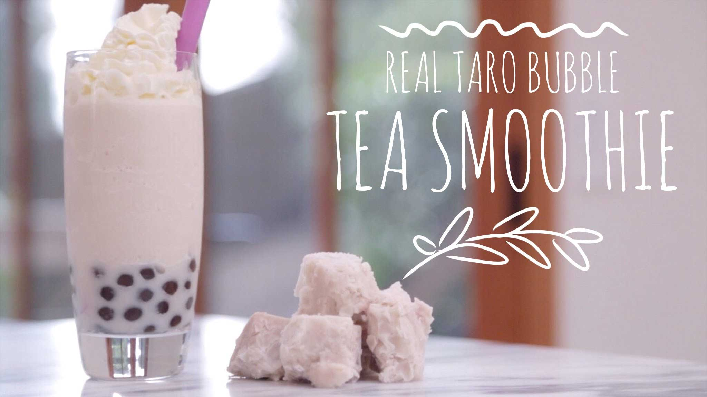

New drink in Store
February 18th, 2017
Bubble Tea house is proudly introducing our new drink! One drinks will be available for order beginning on February 20th, 2017.
Taro Bubble Tea Smoothie
Do you love taro? What about Smoothies? And both combined? Yes! Bubble Tea House will be introducing a brand new flavor to our menu. Our special smoothie recipe uses recipe uses real Taro root, which will taste 100% difference compared to artificial taro powder. Be prepared to get Taro-ized!
Be sure to check the new drinks out by ordering online! First 50 order will recieve 10% off the order.